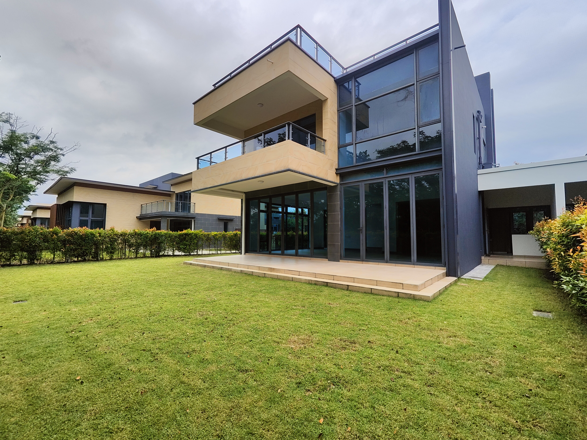

最近，森林城市再次受到外国媒体关注。这一次的新闻主角不是房地产，而是曾经进驻当地的科技创业社区 Network School。它的计划结束后，许多人又问：森林城市是不是再次变回一座“鬼城”？如果只看一个标题，很容易得到这个结论；但从本地实际情况来看，答案没有这么简单。
Network School是什么？
Network School于2024年进驻森林城市，是一个结合住宿、共享工作空间和课程的科技创业社区，主要吸引科技创业者、远程工作者及数码游民。
森林城市拥有大量已经建好的公寓、道路和休闲设施，加上地点靠近新加坡，因此成为他们尝试这种“住在一起、工作在一起”社区模式的地点。参与者可以在同一个环境里生活、上课、运动及发展创业项目。
不过，这项计划维持不到两年。后来，依斯干达公主城市政厅因为营业执照及场地用途不符合规定，撤销相关营业执照，并要求活动停止。
需要分清楚的一点：结束的是Network School在森林城市的营运项目，并不是森林城市本身停止运作。

Network School结束，不代表森林城市完全没有人
外国媒体谈到森林城市时，仍然很喜欢使用“Ghost City”这个称呼。森林城市的长期居住人口及商业活动，确实还没有达到最初规划的规模；部分公寓和商业单位的使用率也仍然偏低，这是不能否认的。
不过，如果你住在新山，或者近期曾经到过森林城市，就会发现它并不是一座完全没有人的城市。
发展商仍然持续举办不同活动吸引本地家庭。周末和假日期间，还是会有人带孩子到沙滩散步、骑脚车、吃东西和拍照。当地也不时举办亲子活动、节庆嘉年华、夜间市集及商业街活动。
森林城市官方Facebook专页目前仍然保持更新，也持续发布节庆和家庭活动资讯。这说明森林城市虽然还称不上成熟热闹的城市，但它已经成为部分新山家庭周末休闲的地点。

为什么外国报道和本地看到的情况不一样？
外国媒体通常从森林城市最初的庞大规划、空置率和发展商背景切入，因此“鬼城”是一个很容易吸引读者点击的标题。
本地人看到的，则是另一种比较日常的变化：这里仍然有人居住，酒店、高尔夫球场、沙滩及商业街还在运作，也有人专程到这里参加活动。
两种说法都不完全错误。森林城市确实没有达到最初承诺的城市规模，但也不能因此说它已经完全被放弃。比较准确的描述是：它是一座已经建成大量硬件，但人口、就业和日常商业仍在慢慢累积的滨海新区。
我的看法：活动可以带来人流，但不等于稳定居住需求
我觉得Network School的结束，说明森林城市要引进国际创业者、数码游民或新型商业模式，并不是只有便宜空间和漂亮环境就足够。长期经营仍然需要符合本地法规，也需要更多交通、商业、就业机会和稳定人口支持。
另一方面，森林城市持续举办亲子活动和市集，是一个正面的动作。这些活动至少能让更多柔佛家庭愿意走进来，认识这里的沙滩、环境及现有设施。
不过，周末有人来玩，与平日有人在这里工作、生活和消费，是两件不同的事。真正决定森林城市能否成熟的，不是一次活动有多少人，而是活动结束后，有多少人愿意长期留下来。
我会观察的四件事：实际居住人口是否增加、日常商店能否稳定经营、就业机会是否进入，以及交通是否变得更方便。
那么，森林城市现在值得买吗？
这篇文章不是要告诉你森林城市一定可以买，或者一定不能买。
如果你喜欢海边、低密度环境、高尔夫及比较安静的生活方式，森林城市现有的一些二手单位确实可能提供特别的价格和生活体验。
但如果你买房的主要目的是短期出租、马上获得高租金回报，或者希望楼下已经有非常成熟的商业生活，就必须更谨慎评估。
对买家而言，最重要的不是只看一则好消息或坏消息，而是了解这里目前真实的居住需求、出租市场、商业成熟度，以及接下来几年能否建立更稳定的人口与经济活动。
森林城市的故事还没有结束，只是它的发展速度和方向，已经与最初的规划不太一样。
资料来源：Times of India、Channel NewsAsia及森林城市官方Facebook专页。文章观点与本地观察由Sam Tee整理。